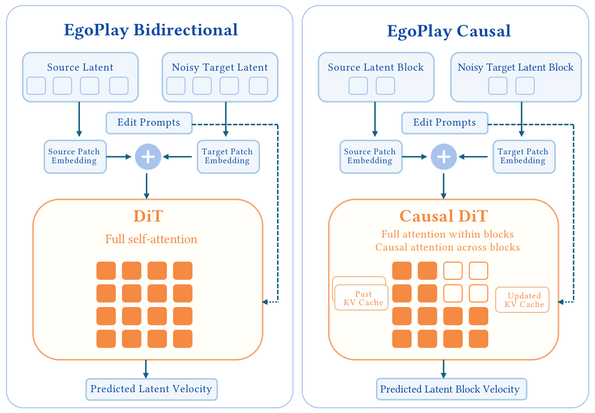
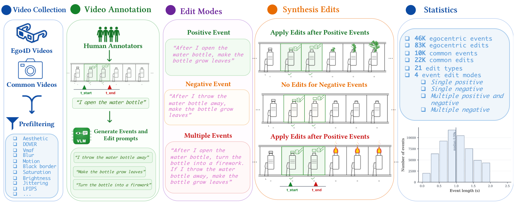

EgoPlay introduces event-triggered video editing for egocentric streams:
given a prompt like "when X happens, do Y," the model must detect the trigger, preserve pre-event frames, and edit only the post-event continuation.
We build a 106K-pair event-editing dataset, train an end-to-end video diffusion editor, and improve over EgoEdit by 17.7% in editing quality.
Event-Triggered Editing
First event-triggered egocentric video editor
Dataset + Data Pipe
Scalable pipeline, 106K event-editing pairs
Performance Gain
+17.7% editing quality over SOTA EgoEdit
Visual Comparison
We compare EgoPlay with the four baseline methods used in the Ego4D event-triggered benchmark. Each card shows the source clip and the GT target alongside the four method outputs, ranked within its mode by EgoPlay's VLM editing-quality score.
Event conditioned edit prompt: After you put the hammer on the floor, add swirling indigo runes that glow faintly along the edges of the lawnmower’s orange casing, casting soft pulses on the concrete.
GT edit prompt: Add swirling indigo runes that glow faintly along the edges of the lawnmower’s orange casing, casting soft pulses on the concrete.
Event conditioned edit prompt: After the conclusion of picking up a sponge from the counter, add a silver chain-link bracelet to my right wrist, glinting subtly under the sink light with a soft shadow cast onto my forearm.
GT edit prompt: Add a silver chain-link bracelet to the right wrist, glinting subtly under the sink light with a soft shadow cast onto the forearm.
Event conditioned edit prompt: Upon raising the blade, replace the gravel yard background with a desert canyon at sunset, keeping the machine’s cage and my legs perfectly unchanged in framing and scale.
GT edit prompt: Replace the gravel yard background with a desert canyon at sunset, keeping the machine’s cage and your legs perfectly unchanged in framing and scale.
Event conditioned edit prompt: Following I click on the tablet, render the entire scene as a vintage comic book with bold halftone dots and hand-inked line work, preserving all objects and positions.
GT edit prompt: Render the entire scene as a vintage comic book with bold halftone dots and hand-inked line work, preserving all objects and positions.
Event conditioned edit prompt: As soon as I finish painting a drawing on a piece of paper with my right hand, change the blue wave portion of the sketch to deep burgundy while preserving all shading and line integrity.
GT edit prompt: Change the blue wave portion of the sketch to deep burgundy while preserving all shading and line integrity.
Event conditioned edit prompt: As soon as I adjust my right shoe lace while standing still, add a matte black wristband with a glowing blue pulse line to the left wrist, casting a soft shadow onto the forearm.
GT edit prompt: Add a matte black wristband with a glowing blue pulse line to the left wrist, casting a soft shadow onto the forearm.
Event conditioned edit prompt: Right after I wipe the engine cover with a rag in my right hand, place a small chrome-plated wrench between the right thumb and index finger, perfectly aligned with the grip of the tool already being held.
GT edit prompt: Place a small chrome-plated wrench between the right thumb and index finger, perfectly aligned with the grip of the tool already being held.
Event conditioned edit prompt: Once I wipe the kitchen cabinet door with the wet wipe, transform the floor tiles into polished river stone with wet sheen and subtle mineral veining, keeping their size, shape, and arrangement identical.
GT edit prompt: Transform the floor tiles into polished river stone with wet sheen and subtle mineral veining, keeping their size, shape, and arrangement identical.
Event conditioned edit prompt: When I pick up the green eraser and rub out a small section of the drawing, add a thin ring of rotating celestial glyphs hovering just above the paper, casting soft indigo shadows onto the sketches below.
GT edit prompt: Add a thin ring of rotating celestial glyphs hovering just above the paper, casting soft indigo shadows onto the sketches below.
Event conditioned edit prompt: After I adjust the phone screen brightness, add a ginger tabby kitten briefly batting at the loose end of the yarn near the right hand, its paw lightly brushing the fabric with soft fur detail and correct scale.
GT edit prompt: Add a ginger tabby kitten briefly batting at the loose end of the yarn near the right hand, its paw lightly brushing the fabric with soft fur detail and correct scale.
Event conditioned edit prompt: When I open the cabinet door below the sink, after the person turns on the faucet, a silver chain-link bracelet appears on the right wrist, the tray changes to a polished marble surface, and raindrops begin to streak down the window behind the sink. After the conclusion of picking up a sponge from the counter, add a silver chain-link bracelet to my right wrist, glinting subtly under the sink light with a soft shadow cast onto my forearm. Once I adjust the position of the dish rack beside the sink, after the person washes the tray, the yellow sponge disappears completely from the countertop, leaving no trace behind.
GT edit prompt: Add a silver chain-link bracelet to the right wrist, glinting subtly under the sink light with a soft shadow cast onto the forearm.
Event conditioned edit prompt: Once I pick up the screwdriver and place it on the ground, transform the caliper bracket into a hollow ceramic mask shaped like a fox, maintaining its size and position in the hands with a matte finish and painted eyes. Once I have finished turning the caliper bracket with both hands, replace it with a hollow ceramic mask shaped like a fox, same size and held in my hands, with matte texture and painted eyes.
GT edit prompt: Replace the caliper bracket with a hollow ceramic mask shaped like a fox, same size and held in my hands, with matte texture and painted eyes.
Event conditioned edit prompt: Immediately after I wipe dust off the tablet screen with my thumb, add swirling golden particles forming a soft aura around the tablet, enhancing the visual energy without altering any objects. Following I click on the tablet, render the entire scene as a vintage comic book with bold halftone dots and hand-inked line work, preserving all objects and positions.
GT edit prompt: Render the entire scene as a vintage comic book with bold halftone dots and hand-inked line work, preserving all objects and positions.
Event conditioned edit prompt: Right after I put the washer on the nut, change the yellow wheel rim to matte volcanic rock with faint glowing fissures, preserving its shape and position exactly. Immediately after I adjust the position of the pliers on the metal surface, remove the yellow cap from the red workbench, seamlessly filling the space with the underlying surface texture. When I touch the yellow cap without picking it up, transform the metallic hub into a hollow, glowing crystal structure with soft light emanating from within, maintaining the same position and scale. After I shift the power drill sideways on the workbench, change the environment to a light drizzle such that raindrops gently form on the tire and workbench, with subtle wet reflections on all surfaces.
GT edit prompt: Change the yellow wheel rim to matte volcanic rock with faint glowing fissures, preserving its shape and position exactly.
Event conditioned edit prompt: Right after I lift the mat and clean the tiles underneath it, add a small black trash bin beside the door frame. After I place the wet wipe on the floor, transform the floor tiles into polished river stone with wet sheen and subtle mineral veining, keeping their size, shape, and arrangement identical.
GT edit prompt: Transform the floor tiles into polished river stone with wet sheen and subtle mineral veining, keeping their size, shape, and arrangement identical.
Event conditioned edit prompt: Immediately after I wipe my forehead with the back of my left hand, restyle the entire image as a high-contrast charcoal sketch with heavy smudged shadows and white highlight strokes, preserving all spatial details. Immediately after I adjust the strap of my backpack on my right shoulder, after the scene, replace the concrete surface with polished marble and add streaks of golden light across the pavement.
GT edit prompt: Restyle the entire image as a high-contrast charcoal sketch with heavy smudged shadows and white highlight strokes, preserving all spatial details.
Event conditioned edit prompt: After I pick up a white box from the floor and place it on the mower deck, change the lighting to simulate late evening with softer, longer shadows and a warm golden glow from the garage lights. Right after I wipe the engine cover with a rag in my right hand, place a small chrome-plated wrench between the right thumb and index finger, perfectly aligned with the grip of the tool already being held.
GT edit prompt: Place a small chrome-plated wrench between the right thumb and index finger, perfectly aligned with the grip of the tool already being held.
Event conditioned edit prompt: Immediately after I wipe the table with a paper towel, change the man's green shirt to a navy blue sweater with a ribbed collar, keeping the baby and posture unchanged. Once I pick up the photo of the child and place it on the notebook, transform the paint brush into a cluster of thin, glowing amber vines that still hold the same shape and position in my hand. Right after I move the jar of water to the left side of the table, replace the small photograph on the table with a folded letter tied with a string, keeping its position and orientation.
GT edit prompt: Transform the paint brush into a cluster of thin, glowing amber vines that still hold the same shape and position in my hand.
Event conditioned edit prompt: Once I adjust the clip holding the white paper around the drawing, add a small black cat sitting near the left edge of the drawing, with its tail slightly brushing the paper's surface. After I lift the phone from the table to check a reference image, change the blue wave portion of the sketch to deep burgundy while preserving all shading and line integrity.
GT edit prompt: Change the blue wave portion of the sketch to deep burgundy while preserving all shading and line integrity.
Event conditioned edit prompt: After I pull the needle through the fabric to continue stitching, transform the fallen thread into a cluster of tiny copper-wire coils that glint softly under the ambient light, maintaining its original position on the patterned fabric. As soon as I adjust the cross-stitch pattern paper with my left hand, change the indoor lighting to dim, mimic an overcast day with soft bluish-white ambient light and no direct shadows. Immediately after I reposition the embroidery block to align it with the design, transform the person into a cyborg with visible metallic joints and a faint glow along the forearm, keeping the same posture and hand movements.
GT edit prompt: Transform the fallen thread into a cluster of tiny copper-wire coils that glint softly under the ambient light, maintaining its original position on the patterned fabric.
EgoPlay also preserves standard egocentric video editing ability when no event trigger is needed.
Source
EgoPlay
EgoPlay-Causal
Edit prompt: add sponge in hands
Source
EgoPlay
EgoPlay-Causal
Edit prompt: Replace the paperback held open by two hands with a frostbound mirror exhaling cloud of vapor, a slightly concave, almost-rectangular pane whose center is a milky, pale-blue reflective surface mottled by shifting, cloud-like vapor, its frame encrusted in jagged, snowflake-like ice crystals and a glittering white‑silver frost that emits a soft bluish glow and drifting particle sparks, with thin wisps of vapor pouring and curling out from the frosty edges.
Source
EgoPlay
EgoPlay-Causal
Edit prompt: Seamlessly transform the paperback book held open in hands into an oak music box with an ornate carved lid and warm brown polished wood, compact and hand-sized, its rim and top overgrown in thick, velvety moss that glows a vivid teal‑cyan, throwing an eerie green light from within the box and producing scattered pinpoints of bioluminescent glow and soft, misty tufts that accentuate the contrast between the smooth wood, metal clasp, and the plush, organic texture.
Source
EgoPlay
EgoPlay-Causal
Edit prompt: Transform the paperback opened in hands into a manila/tan folder, slightly overstuffed with a stepped top edge formed by multiple tabbed dividers; give it a matte paper texture, a small white rectangular label bearing fine printed text, a metal prong fastener visible along the spine, and soft diffuse lighting that creates gentle shadows and a subtle curvature across the surface.
Source
EgoPlay
EgoPlay-Causal
Edit prompt: Change the kitchen to a small ramen shop counter with a wooden counter, hanging ladles, and warm paper lantern light.
Source
EgoPlay
EgoPlay-Causal
Edit prompt: Transform the video into psychedelic poster art style
User Study
We conducted a pairwise preference study with 10 participants.
Each participant completed 30 trials comparing EgoPlay against other baselines across five event-triggered editing scenarios.
In each trial, participants were shown the ground-truth target alongside two anonymized method outputs and asked to indicate a preference or tie on instruction following, edit timing, edit quality, and overall preference.
EgoPlay is preferred over all baselines across every criterion.
All reported win rates significantly exceed the 50% chance level under Wilson 95% confidence intervals.
EgoPlay vs. VLM-guided editing
Prefer EgoPlay Tie Prefer baseline
Click a baseline to view win/tie/loss rates for instruction following, edit timing, edit quality, and overall preference.
Method Overview
EgoPlay takes a source video and an event-triggered instruction, then jointly infers when the trigger event occurs and what edit should appear afterward.
The bidirectional model learns this behavior end-to-end from event-triggered V2V supervision, while the causal variant restricts temporal attention for streamable inference.

EgoPlay conditions a video diffusion editor on the source clip and event-triggered prompt, enabling trigger-aware preservation and post-event editing.
Data Pipeline
We build event-triggered training data from raw videos and annotated event spans.
The pipeline filters clips, generates positive, negative, and event-free instructions, then synthesizes edited targets by applying the requested edit to the post-event segment while preserving the pre-event prefix.

The resulting dataset contains 106K event-triggered clip-prompt pairs covering positive triggers, fabricated-trigger negatives, and multi-event prompts.
Citation
@misc{mai2026egoplay,
title = {EgoPlay: Event-Triggered Video Editing for Egocentric Streams},
author = {Jinjie Mai and Gordon Guocheng Qian and Willi Menapace and Arpit Sahni
and Chaoyang Wang and Ashkan Mirzaei and Runjia Li and Sergey Tulyakov
and Bernard Ghanem and Peter Wonka and Rameen Abdal},
year = {2026},
eprint = {2607.24560},
archivePrefix = {arXiv},
primaryClass = {cs.CV},
url = {https://arxiv.org/abs/2607.24560}
}